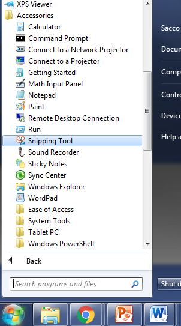
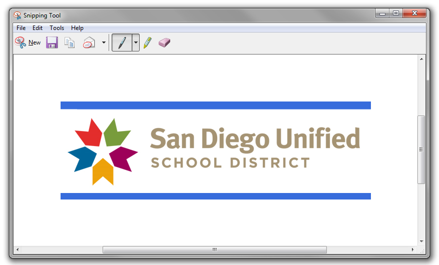

Sometimes submitting your code is not sufficient and a Screenshot is necessary.
On Windows machines there is a tool named the "Snipping Tool" which makes screenshots simple.
On the School computers you can find it by pressing the "Start" button, selecting "All Programs", and scrolling down to the "Accessories" folder. The Snipping Tool should be in there.

When you first lunch the Snipping Tool it automatically will go into "screenshot mode" and allow you to take a screenshot immediately if you wish. After that, the New button will allow you to take another.
The dropdown menu will let you select the type of screenshot you would like to take.

Once you've captured the area that you want, you have two options.

Sometimes your Schoology submissions will ask you to submit a screenshot as evidence of completion.
To accomplish this you must first save the image somewhere that you will remember. When it's time to insert that image into schoology, look for the Image/Media button

From there, click the Attach File button and find the image that you previously saved. It should appear in the submission box after it uploads.